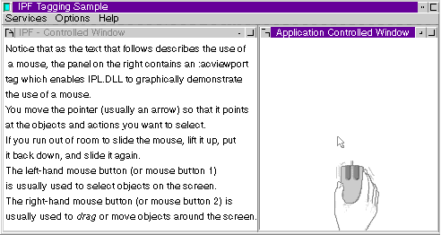

Information Presentation Facility (IPF) is a set of tools used to create an online help facility for an application. IPF is also used to create online information that can be viewed independent of an application. It is a tool for both the information author and the application programmer.
As an author of online information, you can define the windows in which information is displayed. For example, a window can be split so that scrollable text can be displayed beside a stationary illustration that the text describes. The following figure shows an IPF application-control-window.
